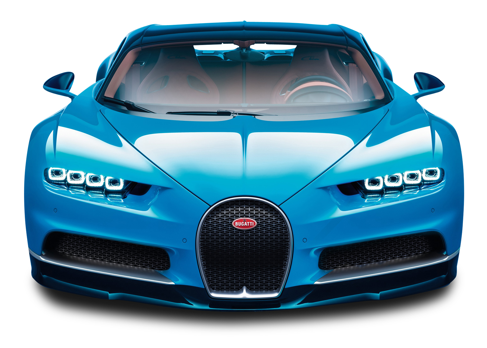

O emblema da Bugatti é adquirido de um fornecedor externo, a Poellath GmbH & Co. KG Münz- und Prägewerk. Trata-se de uma empresa fundada em Schrobenhausen, na Baviera, em 1778.

No ano passado, Stephan Winkelmann, o chefão da Bugatti, prometeu que a fabricante francesa iria revelar duas novas versões do Chiron em 2020. Uma delas já está entre nós, chamada Chiron Pur Sport, que tem ênfase na aerodinâmica, redução de peso e distribuição de potência, para que ele seja ainda mais ágil. Missão interessante para um carro que passa dos 490 km/h (440 km/h na versão de rua).